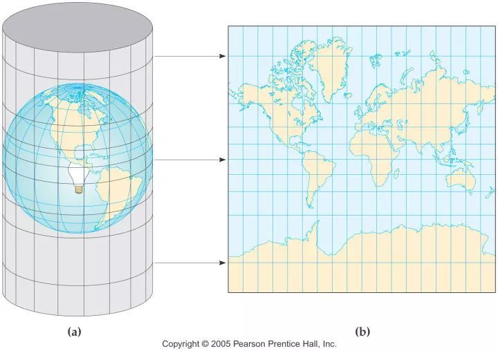
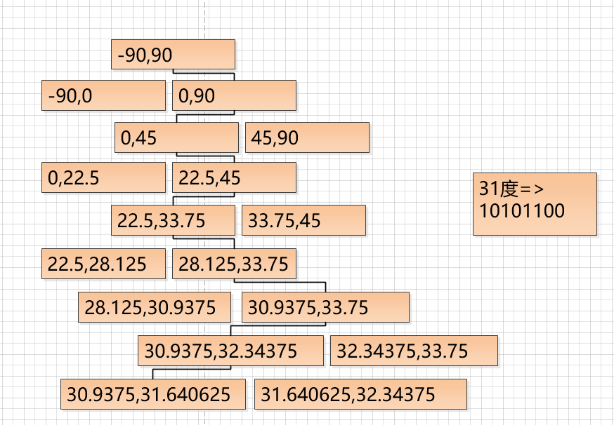
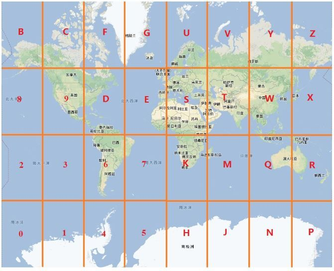
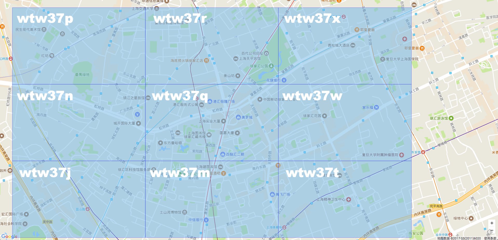
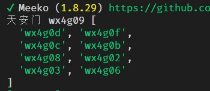
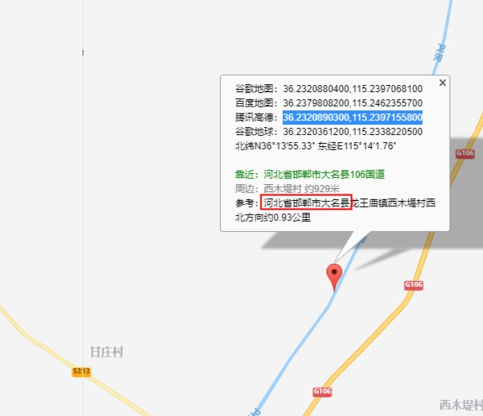

加推实战之GeoHash逆地址查询
WebGIS应用非常广泛，掌握原理和编码方式是全栈必须的技能💥
1.从痛点说起
- 小程序和一些弱网情况下无法获得经纬度所对应的省区信息。😶
- 各大webMapAPI都需要AccessKey，本身管理不统一，普通key的调用会有频度限制。
- 用户希望迅速，定位到所在地区的服务门店😶
需求分析
- 1.离线或本地化，通过经纬度来查询得到中国省区信息。💥
- 2.希望有较高的性能，在后端直接完成经纬度到地区的转化
解决方案学习
- 我们可能需要几个小工具，来完成这个任务😄
- 常规的做法是利用GIS中附近的概念来快速匹配位置
- Mysql和Redis中的关于地理操作的函数
- 理解GeoHash
最终实施方案：将市区的POI点位信息转化为GeoHash，查询时进行附近纠正，最后愉快得出结果😄
JS计算2点经纬度之间的距离
xxxxxxxxxxfunction getDistance (lat1, lng1, lat2, lng2) { let radLat1 = (lat1 * Math.PI) / 180.0 let radLat2 = (lat2 * Math.PI) / 180.0 let a = radLat1 - radLat2 let b = (lng1 * Math.PI) / 180.0 - (lng2 * Math.PI) / 180.0 let s = 2 * Math.asin( Math.sqrt( Math.pow(Math.sin(a / 2), 2) + Math.cos(radLat1) * Math.cos(radLat2) * Math.pow(Math.sin(b / 2), 2) ) ) s = s * 6378.137 // 地球半径; s = Math.round(s * 10000) / 10000 return s}当然咋们的地球是这样的：😶

上面经纬度到距离算法的核心是:
在纬度相等的情况下：
- 经度每隔0.00001度，距离相差约1米；
- 每隔0.0001度，距离相差约10米；
- 每隔0.001度，距离相差约100米；
- 每隔0.01度，距离相差约1000米；
- 每隔0.1度，距离相差约10000米。
在经度相等的情况下：
- 纬度每隔0.00001度，距离相差约1.1米；
- 每隔0.0001度，距离相差约11米；
- 每隔0.001度，距离相差约111米；
- 每隔0.01度，距离相差约1113米；
- 每隔0.1度，距离相差约11132米。
距离计算函数虽好，但当有很多点的时候计算量很大，大部分的C端产品都使用了附近这个概念，所以我们需要了解经纬度的另一种编码GeoHash
GeoHash
1.普通经纬度的缺点
- 后台中，需要同时对经度lng列、维度lat列做查询判断。
- 因为传入的lng、lat值总在变化，数据库中的查询很难进行缓存优化。
2.GeoHash算法
墨卡托投影，是正轴等角圆柱投影。由荷兰地图学家墨卡托(G.Mercator)于1569年发明

- 当然这种投影上线的面积会有很大的失真
- geohash引入z曲线，对每个小方格进行编码，下面会有一个手工计算的过程


- z曲线不断分割平面，原来越密集，精度也不断提高，类似分形

对某一数字通过二分法进行无限逼近。这里以经纬度区间 lng经度[-180,180]，lat维度[-90,90]
使用哈夫曼编码，假设维度值为31度，精确到1度，我们手算一下: 🔥

同理经度也做哈夫曼编码
编码后，将经纬度的bit值交叉组合形成类似 11100 11101 00100 01111 00000 01101 01011 00001
维经维经维，经维经维经。。。
这里是5个bit一组，也就是2^5 ,这样就可以用base32 来描述5bit串
3.base32字符串化
| 十进制 | 0 | 1 | 2 | 3 | 4 | 5 | 6 | 7 | 8 | 9 | 10 | 11 | 12 | 13 | 14 | 15 |
|---|---|---|---|---|---|---|---|---|---|---|---|---|---|---|---|---|
| base32 | 0 | 1 | 2 | 3 | 4 | 5 | 6 | 7 | 8 | 9 | b | c | d | e | f | g |
| 十进制 | 16 | 17 | 18 | 19 | 20 | 21 | 22 | 23 | 24 | 25 | 26 | 27 | 28 | 29 | 30 | 31 |
| base32 | h | j | k | m | n | p | q | r | s | t | u | v | w | x | y | z |
注意上面少了 a i l o 这几个比较容易混淆的字母
- 我们来举个例子
- 天安门经纬度GeoHash(39.90877336, 116.3974911) => wx4g09nj6 ，精度9位
- 当然整个地球平面可以被1位的geohash表示如下图

- 然后经纬度不断二分，每次二分变成4个小方块，每次二分的时候，精度也在不断提高

- 至此，我们可以将我们的省市区经纬度数据，转换为geohash字符串，通过比较字符串来进行逆查询
具体怎么做（干货）？
- 1.将省市区经纬度信息POI转为geohash，根据上面的算法编写GeoHashEncode 函数,结果如下：

这里我只做了6位geohash，误差在600米，对于区一级的定位是足够了，甚至可以考虑5位
- 2.将输入的经纬度坐标，转化为geohash，这里依旧选择转成6位
- 3.考虑地图坐标系的转换，相应的文章可以去搜索加深理解
| 坐标系 | Google Earth（WGS84） | 百度地图（BD09） | 高德地图（火星坐标） |
|---|---|---|---|
| 坐标 | 116.386364 39.911985 | 116.398991,39.919753 | 116.392627,39.913428 |
| 转换为谷歌 | -- | 116.386371,39.912032 | 116.386384,39.912025 |
| 转换为百度 | 116.398979,39.919702 | -- | 116.399003,39.919747 |
| 转换为高德 | 116.392602,39.913383 | 116.392614,39.913434 | -- |
于是我们主要进行高德转baidu的函数即可,非常简单😄
xxxxxxxxxxfunction bd2gd (lat, lng) { let xPI = (Math.PI * 3000.0) / 180.0 let x = lng - 0.0065 let y = lat - 0.006 let z = Math.sqrt(x * x + y * y) - 0.00002 * Math.sin(y * xPI) let theta = Math.atan2(y, x) - 0.000003 * Math.cos(x * xPI) let gg_lng = z * Math.cos(theta) let gg_lat = z * Math.sin(theta) return { lat: gg_lat, lng: gg_lng }}- 4.找到输入的geohash和数据中的geohash后，寻找周围8个邻居，这步比较重要，也是geohash的缺点

从上图可以看出，红点虽然在E区，但实际离开它最近的是在B区的黄点😄
- 假设geohash是6位，bit位数 6*5 = 30位，所以lat lng 都是15bit。我们只要计算连续除以15次2后的lat和lng的值就可以知道上下左右斜8个方向的偏移量
- 举个例子，还是天安门，6位geohash是

- 5.将上面9个点一起查询数据库，得出多条数据
- 6.然后使用文章开头的getDistance函数,找到多条数据中最近的位置
- 7.如果6位geohash找不到，那就降维5位，继续2-6步骤，再找不到，输出不在中国境内，完成🔥
来看一下这个类库结构80行代码，然后做一次验证

- 验证

精度问题
- 9位geohash lat 22bit lng 23bit 误差 ±0.00478km，5*9=45bit。可查wiki百科
- 9位geohash可以达到4.7m的误差，可以说普通使用足够了
- 实际我们得到的经纬度如果没有6位以上，也不需要进行9位geohash的转换
- 实际的算法中，使用了6位geohash，然后降维到5位geohash。
性能
开发完成后需要进行单元测试和性能测试，可以使用之前说到的$.benchmark函数
- 本地逆地址查询的性能在5000次/秒，当然还有不少优化空间
- 10万个POI下，字符串查询附近比普通经纬度距离（直接getDistance）查询大约快3倍，和机器性能有关。
总结
通过经纬度逆查询，分析学习编码提升自我，祝大家2020提升技术，开心，发财 😄